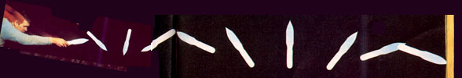
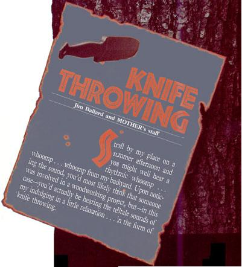
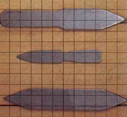

And should you wander out back to investigate the source of that sound, chances are-if you expressed even the slightest bit of interest-I'd put a throwing knife in your hand, give you a few instructions (essentially the same tips I'll be offering in this article), and have you sticking the blade consistently within about five minutes!
Of course, I doubt that many of you will ever pass my home, but I am pretty certain that if you take the time to try knife throwing, you'll become as involved in the pastime as I have. In fact, many of my neighbors who once thought my hobby a bit strange are now enthusiastic throwers themselves. (Even the pastor from up the road recently asked me to help him set up a throwing target in his backyard!)
First of all, you should know that your whittling or hunting knife isn't suited to this activity. (Almost any knife can be thrown effectively, but those not designed for the sport will lack accuracy, will carry the risk of cut fingers, and will more than likely not survive too many throws.) True throwing knives usually have dull edges, allowing a safe and smooth release. Most such implements are also designed to be thrown by either the handle or the blade and are heavy enough to allow easy throwing from relatively long distances. A quality thrower, such as one of those manufactured by the Tru-Balance Knife Co., will be about a foot in length and weigh approximately one pound. (See the address at the end of the article.)
Among the easiest types of throwing targets to build is one consisting primarily of replaceable soft pine boards nailed to a 3/4" plywood backing sheet. (This is one of the few projects to appear in MOTHER's pages that's designed to be destroyed!) To build one, first drive a pair of 2 X 4s into the ground about four feet apart. You'll want about four feet of the boards to remain exposed, and to sink them deeply enough to withstand the hammering that hard-thrown knives can dish out. With that done, nail the 3/4" plywood to the uprights. Then align enough vertical pieces of 1" (or thicker) pine to cover the ply, nailing these in place as you go. You'll have to replace the softwood as it becomes chewed up, so use scraps if you have them available.
Now, holding your knife by the handle, pace of four or five normal steps from the target, and turn to face it. Taking one long step toward the target as you do so (righthanders will move their left foot, southpaws the opposite), throw the knife at the target with a simple overhand pitch, making sure that the blade is released smoothly with no imparted spin, and that it's not twisted to either side as it's released.
If, on your first few throws, the knife strikes edge first, with the point up, move back a foot or so and try again. If it hits with the tip down, move forward a bit. Eventually you'll discover the natural one-turn range for the knife. Mark that spot, and go on to try to find the range for a spin-and-a-half blade-held throw (four feet or so farther back) and then for a double spin handle-held throw (about three or four paces back from the single-spin range). Knife throwing requires practice-like archery, it's a sport that requires a lot of seemingly simple actions to mesh correctly-but within a very short time you'll be getting consistent hits from the one-spin mark, and you can then go on to improve your accuracy (paper plates tacked to the target are good for this).
Keep in mind, as you practice, that knives can bounce back from the target, so position any spectators well behind you (and watch out for yourself, too). Also, never throw at a target without first making sure that the area behind it is free of dozing cats and the like. Once you get the knack of it, I'm sure that you will, as I have, come to take great relaxation and pleasure from the meditative practice of "whoomping" a heavy piece of steel, with style and accuracy, into an upright plank of pine.
EDITOR'S NOTE: For information on TruBal throwing knives, write the Tru-Balance Knife Co., 2155 Tremont Blvd. N. W., Grand Rapids, MI 49504.
The throwing knives shown here were all cut, using a hacksaw, from 3/16" maid steel flat stock. They were then sharpened, only near the points, with a bastard file. Surprisingly enough, we found that these simple creations performed nearly as well as comparably sized commercial throwers, and felt that the freedom to experiment with designs (as represented by the double pointed "beginner's knife") allowed us to study front-rear balance and other factors. (In general, we found that knives balanced at the center point perform best for either-end throwing, while those that are heavier toward the point or hilt throw best when the lighter end is grasped.) Though we didn't temper the knives, they could be hardened by simply heating them to a cherry red in a woodstove or barbecue and then quenching the metal in water. If you'd like to take a very low-cost approach to knife throwing until you decade how great your interest will be, use the designs we've provided (1 sq = 1"), find a scrap of mild steel stock, and gave this simple project a try!
|
 |
 |
 |